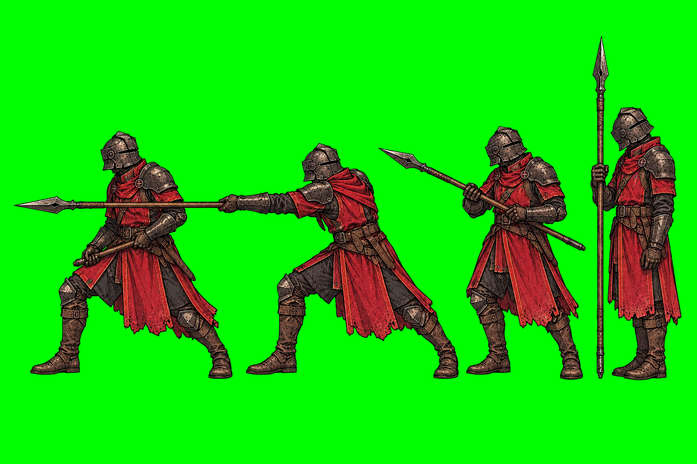
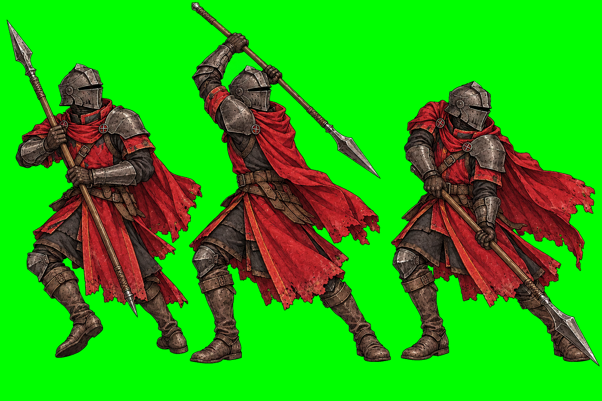
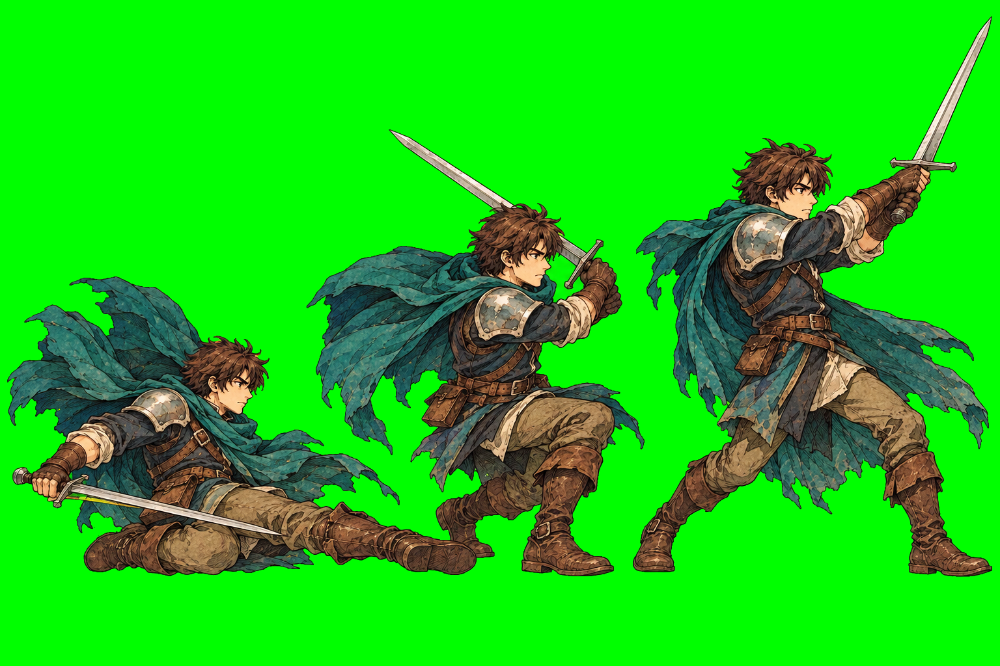
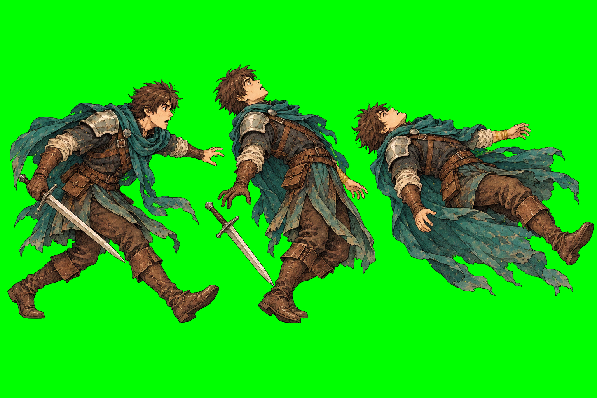
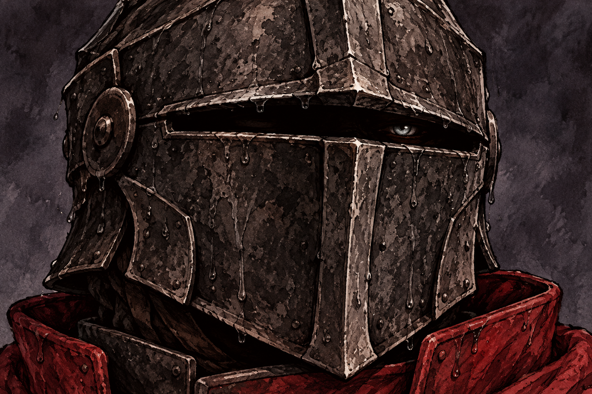
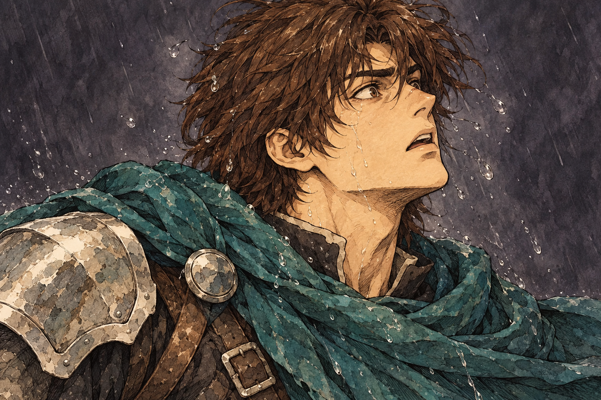

Four pose sheets and two close-ups for the Ford vertical slice. Click any image for the full PNG. The long spear and some cloak edges need mask cleanup before pose extraction. Review notes · Exact prompts.





